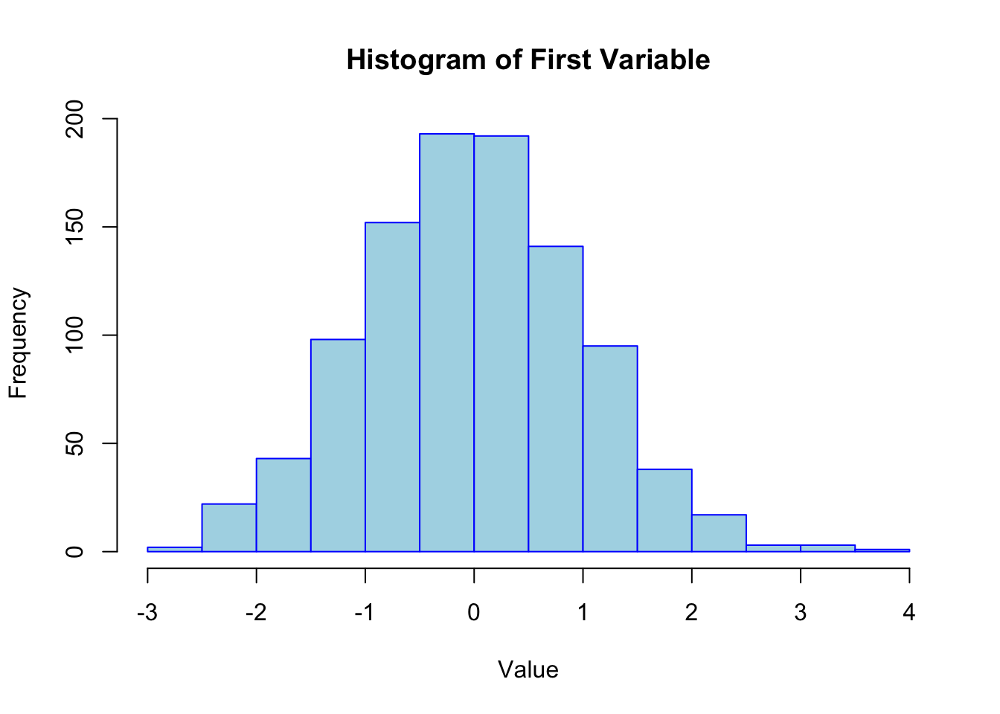

# Load the necessary library
library(MASS)
# Set parameters for the simulation
p <- 4 # Number of variables
N <- 1000 # Number of samples
mean_vec <- rep(0, p) # Mean vector for the multivariate normal distribution
cov_mat <- diag(p) # Covariance matrix (identity matrix here for simplicity)
# Set seed for reproducibility
set.seed(2025)Simulate Multivariate Normal Data
Introduction
This vignette demonstrates how to generate multivariate normal data using the function MASS::mvrnorm(). We will simulate data from a multivariate normal distribution with a specified mean vector and covariance matrix. This method is commonly used in simulations and can be used as a basis for generating multivariate data with other transformations.
In this example, we will generate multivariate normal data with specific parameters and visualize the results.
Setup
Before starting, we need to load the required package and set the necessary parameters for the simulation.
Generate Multivariate Normal Data
Next, we will use the MASS::mvrnorm() function to generate multivariate normal data with the specified parameters.
# Generate the data
mvnorm_samples <- mvrnorm(n = N, mu = mean_vec, Sigma = cov_mat)
# View the first few rows of the simulated data
head(mvnorm_samples) [,1] [,2] [,3] [,4]
[1,] 0.11119289 1.3421668 0.8739802 0.6207567
[2,] 0.63273341 0.5844548 -2.0766673 0.0356414
[3,] -0.06213039 -0.6628753 -0.6079837 0.7731545
[4,] 0.47694280 1.5200187 -1.4219974 1.2724891
[5,] -0.37989913 0.2956954 -0.7338647 0.3709754
[6,] 0.28925226 -1.5125323 -0.7158169 -0.1628543Visualizing the Results
Let’s visualize the first two variables of the generated multivariate normal data to better understand its structure.
# Plot the first two variables of the multivariate normal data
plot(
mvnorm_samples[, 1],
mvnorm_samples[, 2],
main = "Scatterplot of First Two Variables of Multivariate Normal Data",
xlab = "Variable 1",
ylab = "Variable 2",
pch = 19,
col = "blue"
)
Additionally, we will plot the histograms of the first variable.
# Plot the histogram of the first variable
hist(
mvnorm_samples[, 1],
main = "Histogram of First Variable",
xlab = "Value",
col = "lightblue",
border = "blue"
)
Summary
In this vignette, we demonstrated how to use the MASS::mvrnorm() function to generate multivariate normal data. The steps involved specifying a mean vector and a covariance matrix, and then simulating the data with the given parameters. We visualized the first two variables of the data in a scatterplot and examined the distribution of the first variable using a histogram.
The generated multivariate normal data can be used for simulations or as input for further analysis that requires normally distributed variables.